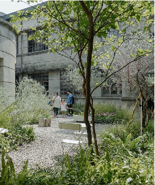
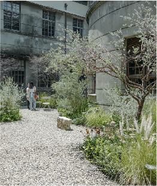
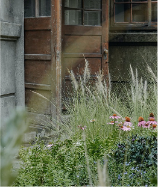
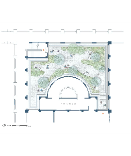

Bathhouse Garden

ABOUT THE PROJECT
“It is not just a library but a garden as well.” Have a private talk with a garden. Located in the north of the tobacco factory, “Not Just a Library” is set in a renovated women’s bathhouse. As you look through the semicircular window, a sunken garden stands ahead of you.
Since the factory ceased to produce cigarettes in 1998, a large area of the garden has become dominated by volunteer coconut trees. As hard as concrete, their roots are intertwined with underground structures from different eras. We hope to employ a different method to build a connection with past textures of space and bring a new sensory experience — a close contact with time and space.
Architects: MOTIF
Year: 2012



